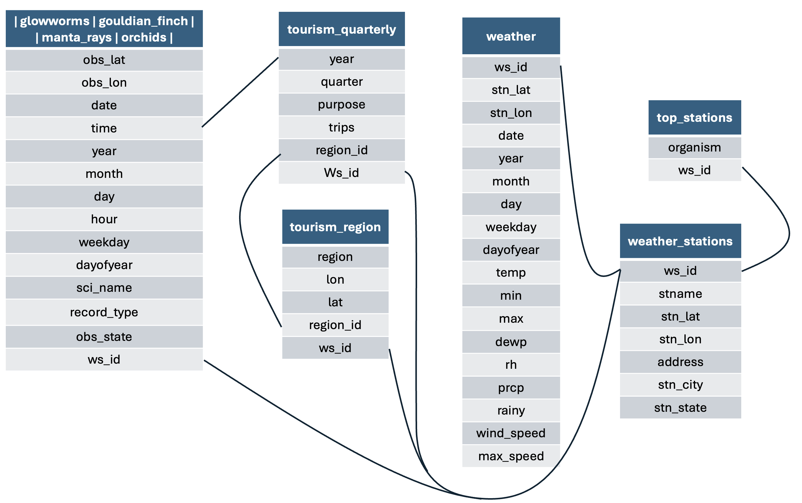

The goal of ecotourism is to provide clean, ready-to-use datasets for example analyses in teaching, demos, and reproducible workflows.
It currently includes wildlife (e.g., cuttlefish) occurrence records, tourism counts by region, and local weather for matching locations.
Website
👉 Documentation site: https://vahdatjavad.github.io/ecotourism/
Installation
Install the development version from GitHub:
# install.packages("pak")
pak::pak("vahdatjavad/ecotourism")If you prefer remotes:
# install.packages("remotes")
remotes::install_github("vahdatjavad/ecotourism")What’s inside?
List all available datasets and their short titles:
| Object | Title |
|---|---|
| glowworms | Glowworms Occurrence Data (2014–2024) |
| gouldian_finch | Gouldian Finch Occurrence Data (2014–2024) |
| manta_rays | Manta Ray Occurrence Data (2014–2024) |
| orchids | Orchid Occurrence Data (2014–2024) |
| top_stations | Top Weather Stations for Each Organism |
| weather_data | Daily Weather Data for Top Stations (2014–2024) |
| weather_stations | Australian Weather Station Metadata |
| tourism_quarterly | Australian tourism spots quarterly counts |
| tourism_region | Australian tourism regions with lat and lon. |
This is the relational dataset in this package:

To see documentation for any dataset, use:
?ecotourism::DATASET_NAMEExample
This is a minimal usage sketch. Replace DATASET_NAME with one from the table above.
library(ecotourism)
# List datasets included in the package
utils::data(package = "ecotourism")
# Example workflow (replace DATASET_NAME with a real object from the list)
# data("DATASET_NAME", package = "ecotourism")
# head(DATASET_NAME)
# str(DATASET_NAME)
# Tip: quick summaries if dplyr is available:
# if (requireNamespace("dplyr", quietly = TRUE)) {
# dplyr::glimpse(DATASET_NAME)
# }Getting help
- Open an issue with a minimal reproducible example: https://github.com/vahdatjavad/ecotourism/issues
- Check the function/dataset help pages (e.g.,
?ecotourism::DATASET_NAME).
Contributing
Pull requests are welcome! If you’re unsure where to start, open an issue first to discuss changes.
Citation
If you use ecotourism in teaching, demos, or research, please cite it:
citation("ecotourism")